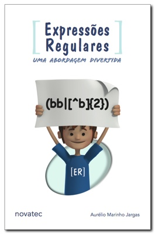

AVISO: Há uma edição mais recente deste livro.
|  | |
|
ESGOTADO!
Veja a edição mais recente |
Ficha
| Título: | Expressões Regulares - Uma abordagem divertida |
| Autor: | Aurelio Marinho Jargas (site, blog, twitter) |
| Editora: | Novatec |
| Edição: | 1ª |
| Ano: | 2006 |
| Páginas: | 144 |
| Formato: | 14×21 cm |
| Peso: | 185 gramas |
| Encadernação: | brochura |
| Idioma: | Português |
| Lançamento: | 10 de novembro de 2006 (anúncio do autor) |
| ISBN: | 85-7522-100-0 |
| Preço: | R$ 32,00 |
Conquistas
| Na lista dos Mais Vendidos |
Resenha

As Expressões Regulares podem ser utilizadas em diversos aplicativos, como editores de textos, leitores de e-mail e linguagens de programação, no UNIX, Linux, Windows e Mac. Qualquer usuário de computador pode usufruir dos seus benefícios. Profissionais que manipulam texto e dados economizarão horas de serviço braçal: escritores, revisores, tradutores, programadores e administradores de sistema.
Em uma abordagem incomum de encontrar em livros técnicos, as explicações didáticas e divertidas tornam prazerosa a leitura de um tema tão árido e abstrato. É uma conversa entre amigos, partindo do básico até chegar aos conceitos avançados. Esta obra revela aos poucos o poder das expressões, o leitor irá saborear o tema descobrindo seus segredos descontraidamente.
$ diff -u guia livro
 |
 |
|
| Guia rápido | Livro | |
|---|---|---|
| Ano: | 2001 | 2006 |
| ISBN: | 85-7522-011-X | 85-7522-100-0 |
| Páginas: | 96 | 144 |
| Formato: | 10,5×23 cm | 14×21 cm |
- Formato novo
- O antigo formato "de bolso" (10,5x23 cm) é prático para carregar, mas torna a leitura cansativa, pois as folhas são estreitas e o texto tem que ficar espremido, usando letras pequenas e pouco espaçamento. Algo como ler e-mails no celular... Agora o formato é o de livro normal (14x21 cm), com todo o espaço disponível para o texto espalhar-se livremente.
- Conteúdo solto
- Com o espaço ampliado, agora o conteúdo pôde se expandir e ficar mais à vontade. A diagramação está mais solta, com respiros, caixas de texto, tabelas bonitas e fonte maior, tornando a leitura muito mais agradável e prazerosa.
- Cara de livro
- Agora ele está no mesmo formato que os outros livros, com capa bonita e contracapa informativa e amigável. Tem até as "orelhas", que são as dobrinhas nas capas, que além de trazerem informações adicionais, servem de marcadores de páginas. Ah, uma das orelhas tem uma foto minha, que segundo estudos de especialistas dinamarqueses, servirá para impulsionar a venda do livro perante o público feminino adolescente ;)
- Ilustrações!
- A grande novidade visual são as ilustrações novas que povoam todo o livro. O texto é como se fosse uma conversa, com o leitor fazendo várias perguntas e comentários sobre o assunto. O leitor foi personificado e cada um destes comentários ganhou mais expressividade e emoção com as ilustrações.
- Conteúdo reorganizado
- A estrutura de tópicos foi reorganizada, ficando mais lógica, agora contando com capítulos e apêndices. E claro, o sumário no início e o índice remissivo no final. Índice este, aliás, que cresceu bastante. Agora ficou muito fácil encontrar algum assunto específico no meio do livro. É um grep :)
- Seções novas
- Como agora é um livro, também conta com coisas de livro: Dedicatória, Agradecimentos e um Prefácio escrito pelo meu grande amigo Franklin Carvalho. Ele estava muito inspirado e deu à luz a um texto viajante e divertido.
- Conteúdo atualizado
- Todo o livro foi lido, relido e trelido. Várias vezes. E de novo. Além das erratas do guia, vários outros trechos foram corrigidos e atualizados. Endereços de Internet, listas de discussão e outras referências externas também foram checadas e atualizadas.
- Conteúdo novo
-
Saltando de 96 páginas estreitas para 141 páginas espaçosas, o
conteúdo também está mais recheado, ganhando quatro tópicos
inteiramente novos:
- C
- Java
- Ruby
- OpenOffice / BrOffice
Errata
| Página | Correção |
|---|---|
| 14 | s/rêde/rede/ |
| 14 | s/Virtuose/Virtuoso/ |
| 49 | Resumão: ^ é especial no começo da ER e também no início de uma lista |
| 88 | [Pp][Rr][Oo][Bb]... |
| 89 | Negação de uma palavra: a lógica empregada detecta início-de-palavra e não palavra inteira. Daí irá indevidamente negar outras palavras de mesmo início. No exemplo, além de "aqui", "aquilo" também casa. A solução é acrescentar no final mais uma alternativa: |aqui[^a-zà-ü] |
| 93 | Faltou incluir o U com trema nos remendos, ficando: à-ü, À-Ü e À-ü |
| 98 | "Com essa seqüência agrupamos a palavra Gentalha!" |
| 107 | "Esses modificadores, como o I e L" |
| 114 | s/sempre tentar aplicar/sempre tenta aplicar/ |
| 115 | s/case as letras de A a Z/case as letras de a a z/ |
| 135 | Faltou incluir o U com trema nos remendos, ficando: à-ü, À-Ü e À-ü |
| 136 | Ajustes na tipografia da tabela ASCII: 34 é aspa dupla reta e não curva; 39 é apóstrofo reto e não curvo; 96 é símbolo do acento grave e não apóstrofo curvo; 183 é o símbolo do ponto intermediário e não a letra o minúscula. A tabela deveria ser chamada de ISO-8859-1 (a qual inclui o ASCII como um subconjunto). |
Muito obrigado a todos que contribuíram enviando estas erratas:
- Allan Koch Veiga
- Caio Graco Pereira Santos
- Cassyus Pereira Lobo
- Fabricio Beltram
- João Alberto de Oliveira Lima
- José Ricardo Almeida de Britto Filho
- Richard Sachsse
Comprar
Você é colecionador e quer comprar essa edição antiga do livro?
Essa edição está esgotada, porém, às vezes, algumas livrarias ainda possuem um último exemplar em estoque. Veja se aparece alguma oferta neste site: BuscaPé.
Dica: Para evitar transtornos, entre em contato com a livraria e pergunte se o livro realmente existe no estoque deles.
Se você procura a edição mais recente desse livro, clique aqui.
« Voltar para a página principal